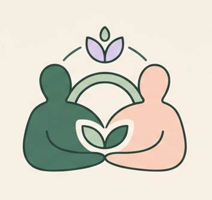
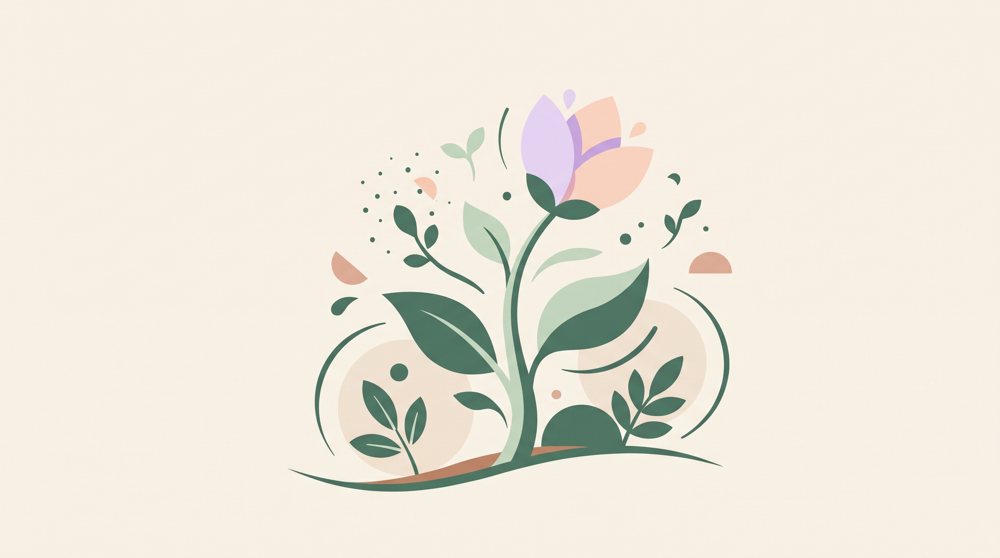

Acompanhe o progresso
Consulte o histórico das sessões de forma simples e organizada.
O Florescer aproxima famílias e profissionais, tornando o acompanhamento terapêutico mais transparente, organizado e acolhedor.
Consulte o histórico das sessões de forma simples e organizada.

Mantenha uma comunicação mais próxima com os profissionais.
Registre e celebre as pequenas e grandes vitórias.
Seus dados protegidos, com respeito à privacidade da sua família.

Mais do que acompanhar terapias,
o Florescer valoriza o desenvolvimento único de cada criança.